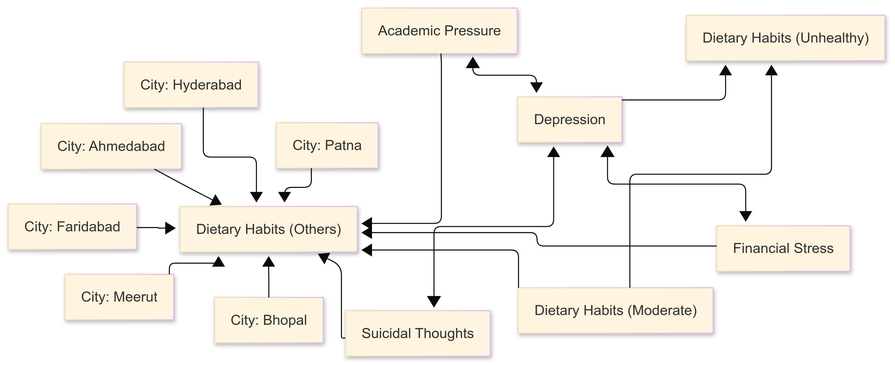

A Causal Approach to Understanding Student Depression
Maryam Almahasnah
Hunter Brownell
Kevin Chan
Biwei Huang (Mentor)
Jelena Bradic (Mentor)
Introduction and Motivation
Mental health disorders have always been, and continue to be, a major concern in people's lives. In the US, at least 28% of college students were diagnosed with depression or another mood disorder. Additionally, more than 9 in 10 students who face academic challenges say these challenges affect their mental health. The goal of our project is to use causal knowledge to establish a framework for the root causes of depression, specifically in students.
The Data
View the source of this content.
The data we used is a Kaggle dataset on student depression. It contains 27,902 entries with each entry being a different student from K12 to PhD in different Indian cities. The dataset has 18 columns with each representing a different feature. Features include Age, Gender, City, CGPA, Profession, Academic Pressure, Dietary Habits, Sleep Duration, and more. We had to one hot code some columns to make them more workable with our causal discovery algorithms, which lead to the feature count reaching 111.
Methodology
Feature Selection using LASSO
Starting with 111 variables, we used LASSO feature selection to pick the most important ones. LASSO regression helps identify the most relevant features by shrinking less important coefficients to zero, improving interpretability. It minimizes a cost function that combines the sum of squared residuals and an L1 penalty.
Peter-Clark (PC) Algorithm
The PC Algorithm infers causal relationships under the assumption of no hidden confounders. It starts with a fully connected graph and removes edges based on a conditional independence test. It then iteratively tests independence with increasing conditioning sets and directs remaining edges using colliders. The final output is a partially directed acyclic graph, though results may vary slightly across runs.
Fisher's z-Test
One of the options we used for the Conditional Independence Test when running PC is the Fisher’s Z test. Fisher’s Z test assumes the data follows a normal distribution and measures how two variables relate when controlling for others. If the test finds them independent, the edge between them is removed; otherwise, it is kept.
Chi-Squared Test
Another option we used for the Conditional Independence Test when running PC is the Chi-squared test. The Chi-squared test determines whether two categorical variables are independent. It compares observed and expected values, removing edges when independence is detected.
KCI
KCI uses kernel methods to detect complex, non-linear dependencies. It maps data into a higher-dimensional space and applies a statistical test to determine if variables are conditionally independent. Due to its high computational cost, we applied this test to a limited sample size.
FCI with Kernel-based Conditiontal Independence Test (Fast KCI)
FCI differs from PC by accounting for hidden confounders. It follows a similar process but produces a Partial Ancestral Graph that reflects possible unobserved variables. The fast KCI method makes this approach more efficient, allowing for larger datasets.
Counterfactual Computing
Counterfactual computing estimates alternative outcomes by simulating interventions. For example, it can predict how changing academic pressure might affect depression levels in students. This method helps analyze both direct and hypothesized causal effects on depression.
Results
Using the 13 features selected by LASSO, we ran the Peter-Clark Algorithm with Fisher’s Z, Chi-Squared, and KCI tests. Fisher’s Z and Chi-Squared used all 27,900+ samples, while Fast KCI was limited to 2000, and KCI to 500 due to its high computational cost.
The Fisher’s z graph shows Depression linked to Academic Pressure, Financial Stress, Suicidal Thoughts, and Dietary Habits, suggesting depression may worsen eating habits. Academic Pressure leads to Financial Stress, which then connects to Suicidal Thoughts, possibly indicating a chain reaction. Depression also points to Hyderabad and Ahmedabad, though the reason is unclear.

In the Chi-Squared causal graph, Depression is bi-directed with Academic Pressure, Financial Stress, and Unhealthy Dietary Habits, suggesting a hidden confounder. Patna has a direct link to both Depression and Suicidal Thoughts, while Depression unexpectedly points to Ahmedabad.
The chi-squared independence test results are visualized below:
In both of our fast and regular KCI graphs, Depression is bi-directed with Academic Pressure, Financial Stress, and Unhealthy Dietary Habits, which reinforces the idea of a hidden confounder. The other interesting here to note is that these three also are bidirected to Dietary Habits (Others), which continues to suggest that depression adjacent factors can result in irregular eating habits or vice-versa.
Below is the causal graph generated using the KCI algorithm:
Below is the causal graph generated using the Fast KCI algorithm:

Key findings across all methods highlight three consistent factors influencing Depression: Academic Pressure, Financial Stress, and Financial Stress. These variables consistently appear as "parents" of Depression, suggesting they are likely causes rather than effects.
We also identified that while Depression and Unhealthy Eating Habits are related, eating habits appear as a "child" of Depression, suggesting they are more likely a consequence rather than a cause.
The following images depict different counterfactual scenarios analyzed:
We did counterfactual reasoning on the most robust factors we found from doing causal discovery algorithms to see the strength of the connection between the feature and Depression. Academic Pressure and Suicidal Thoughts made a significant difference in the score for Depression (the original observed value for Academic Pressure was 5, and 1 for Suicidal Thoughts). Financial Stress had an orignial observed value of 1, and made less of a difference on the Depression score.
Additionally, we did counterfactual with sleep duration as the intervention, because it was one of the variables that we thought would be important, but did not pass the LASSO feature selection. The fact that the Sleep Duration changing did not heavily sway depression hints towards our LASSO selection being robust in picking out good variables.
Discussion and Conclusion
The study identified four key factors closely linked to depression: Academic Pressure, Unhealthy Eating Habits, Financial Stress, and Suicidal Thoughts. Academic Pressure emerged as the strongest contributor, which aligns with our focus on students. Surprisingly, Financial Stress had a much smaller impact than expected. While financial security may provide some relief, it seems to matter less than the daily academic challenges students face. This raises questions about how students perceive financial stress—whether schools provide adequate support or if shared financial struggles create a sense of camaraderie.
Our findings highlight one clear takeaway: excessive academic pressure significantly increases the risk of depression. While financial stress plays a role, its effect is much smaller. Students with more financial support may handle slightly heavier workloads, but academic pressure remains the dominant factor. When choosing a school or major, students should prioritize their mental well-being and consider the potential stress levels involved.
Ethical Considerations and Limitations to Generalization
The dataset suffers from a lack of diversity, as all of its data comes from cities in India. So we can not fully say that it generalizes to broader population. Additionally, the students who were surveyed come from as young as K12 students to PhD students, which poses another limitation to gerelazition as students with vastly different ages would most probably have different issues. We can guess that, a PhD student, for example, would probably be more likely to have financial stress than a K12 student. Features like "Dietary Habits - Others" are very vague and are hard to interpret.
References and Acknowledgements
- Huckins JF, Hedlund EL, Murphy EI, Rogers C, Wang W, Obuchi M, Holtzheimer PE, Wagner DD, Campbell AT, DaSilva AW. (2020). Causal Factors of Anxiety and Depression in College Students: Longitudinal Ecological Momentary Assessment and Causal Analysis Using PCMCI. JMIR Ment Health.
- Liu XQ, Guo YX, Zhang WJ, Gao WJ. (2022). Influencing factors, prediction, and prevention of depression in college students: A literature review. World J Psychiatry, 12(7), 860-873. doi:10.5498/wjp.v12.i7.860. PMID: 36051603; PMCID: PMC9331452.
- Soh N, Ma C, Lampe L, Hunt G, Malhi G, Walter G. (2012). Depression, financial problems, and other reasons for suspending medical studies, and requested support services: Findings from a qualitative study. Australasian Psychiatry, 20(6), 518-523. doi:10.1177/1039856212460737.
- Broomhall AG, Phillips WJ, Hine DW, Loi NM. (2017). Upward counterfactual thinking and depression: A meta-analysis. Clin Psychol Rev, 55, 56-73. doi:10.1016/j.cpr.2017.04.010. PMID: 28501706.
- College Student Mental Health Statistics | BestColleges.